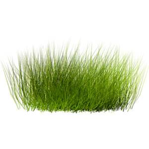

<!doctype html>
<link href="https://fonts.googleapis.com/css?family=Arizonia" rel="stylesheet" type="text/css"/>
<link rel="stylesheet" href="../styles/main.css">
<link rel="import" href="../bower_components/polymer/polymer.html">
<link rel="import" href="elements.html">

<dom-module id="cc-app">
  <template>
      <style include="shared-styles"></style>
        <style is="custom-style">
        :host{
          /*These two styles should not be changed externally*/
          display:block !important;
          position:"relative !important";
        }
        .sticky {
          /*This style can be moved to an external sheet*/
            position: "-webkit-sticky";
            position: "sticky";
        }

        .sticky--desktop {
          /*This style can be moved to an external sheet*/
            display: none;
        }

        @media screen and (min-width: 60em) {
          /*This style can be moved to an external sheet*/
            .sticky--desktop {
                display: block;
            }

            .sticky--mobile {
                display: none;
            }
        }

        </style>
        <div id="companyname" style="">Cross Cut Property Services Inc.</div>

        <cc-title-bar unitid="crosscutproperty/2016" id="titlebar">
          <!--###############################################################
          Declaration and Attention Getter / Anouncement
          Your graphic and primary customer view items load here
          ###################################################################-->
        </cc-title-bar>

        <!--<cc-navigator class="sticky" attr-for-selected="data-route" id="navigator" selected="[[pageData.page]]" style="position:sticky; z-index:110 !important;top:50.24px;">
          <ul class="main-nav">
            <li class="top-level-link">
              <a data-route="home" href="{{baseUrl}}home"><span>Home</span></a>
            </li>
            <li class="top-level-link">
              <a data-route="takeaction" href="{{baseUrl}}takeaction"><span>Take Action</span></a>
            </li>
            <li class="top-level-link">
              <a data-route="coveragearea" href="{{baseUrl}}coveragearea"><span>Coverage Area</span></a>
            </li>
            <li class="top-level-link">
              <a data-route="services" href="{{baseUrl}}ourservices"><span>Our Services</span></a>
            </li>
            <li class="top-level-link">
              <a data-route="equipment" href="{{baseUrl}}equipment"><span>Equipment</span></a>
           </li>
         </ul>
       </cc-navigator>-->

        <!-- Main Content -->
      <app-location route="{{route}}" query-params="{{queryParams}}" use-hash-as-path></app-location>

      <a href="http://127.0.0.1:31999/polymer_crosscut_clientsite/_cc_app2/blog/art/list" data-page="art">Art</a> <!--app route must prevent def-->
      <a href="/film/list" data-page="film">Film</a>
      <a href="/photo/list" data-page="photo">Photo</a>
        <iron-selector selected="[[pageData.page]]" attr-for-selected="data-page" >
          <a href="/art/list" data-page="art">Art</a> <!--app route must prevent def-->
          <a href="/film/list" data-page="film">Film</a>
          <a href="/photo/list" data-page="photo">Photo</a>
        </iron-selector>
        <!--{{_logme2(queryParams)}}-->
        <!--{{_logme2('before subroute')}}
        {{_logme2(pageData)}}
        {{_logme2(subrouteData)}}
        {{_logme2('after subroute')}}-->
        <!--<div>{{ _logme2(subrouteData) }}</div>
      <div>{{ _logme1(pageData.page) }}</div>
        <div>{{ _logme2(mycat) }}</div>-->
      <!--<app-route route="{{subrouteData}}"
                      pattern="/posts/:slug"
                      active="{{postsActive}}"
                      data="{{postsData}}">
        </app-route> -->
        <!--<div>{{ _logme2(postsData) }}</div>
        <div>{{ _logme2(postsActive) }}</div>-->
        <main>
        <cc-pages route="{{route}}" pagedata="{{pageData}}" testprop="{{getForReal}}"></cc-pages>

      </main>
      {{_logme2(getForReal)}}
<!--#################
        <div class="content" id="page-container" style="">
          <iron-pages attr-for-selected="data-route" selected="[[pageData.page]]" style="z-index:70">


            <section data-route="home" tabindex="-1" class="content-page" style="display:none !important;">
            </section>

<!--#################
            <section data-route="services" tabindex="-1" class="content-page" style="display:none !important;">
            </section>

<!--#################
            <section data-route="takeaction" tabindex="-1" class="content-page">
              <paper-material elevation="1">
                <h1 class="page-title" tabindex="-1">Take Action</h1>
                <p><h3></h3>To strengthen outstanding service, client relationships, customer satisfaction and facilitate exceptional experience the features below are
                   provided for our clients, and professional network as well as ourselves to manage and organize our mowing routes, and connect with others.
                </p>
                <ul>
                  <li><a href="{{baseUrl}}underconstruction">Start A Quote</a></li>
                  <li><a href="{{baseUrl}}underconstruction">Write A Review</a></li>
                  <li><a href="{{baseUrl}}underconstruction">Get Social + Connect</a></li>
                  <li><a href="{{baseUrl}}underconstruction">Add to Contact List</a></li>
                  <li><a href="{{baseUrl}}underconstruction">Provide Professional Endorsment</a></li>
                </ul>
              </paper-material>
            </section>

<!--#################
            <section data-route="coveragearea" tabindex="-1" class="content-page">
              <paper-material elevation="1">
                <h1 class="page-title" tabindex="-1">Coverage Area</h1>
                      <p>We service the Twincities, Metropolitan and Extended Areas completing weekly routes throughout
                        Minneapolis, Saint Paul NE and NW suburbs. Our service area is increasing, please call Rick Zobel
                        at 763-234-7869 or complete our <a href="{{baseUrl}}underconstruction">online quote request here</a>
                        to go over details and find a service schedule. We follow up on all quote requests submitted via
                        online tool and are happy to take your call.
                      </p>
              </paper-material>
            </section>

<!--#################


<!--#################

<section data-route="ourservices" tabindex="-1" class="content-page">
  <paper-material elevation="1">
    <h1 class="page-title" tabindex="-1">Our Services</h1>
    <ul>
      <li><a href="{{baseUrl}}underconstruction">Seasonal Cleanup, Yard Wast Collection and Disposal</a></li>
      <li><a href="{{baseUrl}}underconstruction">Herbicide / Fertilizer Application and Manual Weed Control</a></li>
      <li><a href="{{baseUrl}}underconstruction">Weekly Lawn Maintenance, Trimming and Traffic Area Clearance </a></li>
      <li><a href="{{baseUrl}}underconstruction">Open Lot and Wild Growth Maintenance</a></li>
    </ul>
  </paper-material>
</section>
<!--#################


<!--#################
            <section data-route="equipment" tabindex="-1" class="content-page">
              <paper-material elevation="1">
                  <h1 class="page-title" tabindex="-1">Equipment</h1>
                        <p>Outstanding and well maintained equipment is key to a job done right. One of our jobs is to ensure all Tools and Equipment are in optimum condition.
                           We use best in class zero turn lawn mowers, weedwhips, leaf blowers, bagging and collection aparatus. We take pride in our tools employing equipment
                           from makers such as: Toro, Gravely, Husqavarna,
                        </p>
              </paper-material>
            </section>

<!--#################
            <section data-route="underconstruction" tabindex="-1" class="content-page">
              <paper-material elevation="1">
                <div style="float:left;max-width:600px;">
                  <h1 class="page-title" tabindex="-1">Under Construction</h1>
                  <p>Thank you for visiting, this content is not yet ready or available at this time.
                     Please stop back near the First of May 2016 to check on improvements.</p>
                </div>
                
                <div style="display:block; clear:both"></div>
              </paper-material>
            </section>

          </iron-pages>
        </div> -->
    <div id="outro"><span id="thankyou">Thank you for visiting & hope to see you soon. Call Rick Zobel, 763-234-7869 to learn more</span></div>
    <!--<paper-toast id="toast">
      <span class="toast-hide-button" role="button" tabindex="0" onclick="app.$.toast.hide()">Ok</span>
    </paper-toast>-->

    <!-- Uncomment next block to enable Service Worker support (1/2) -->
    <!--
    <paper-toast id="caching-complete"
                 duration="6000"
                 text="Caching complete! This app will work offline.">
    </paper-toast>

    <platinum-sw-register auto-register
                          clients-claim
                          skip-waiting
                          base-uri="bower_components/platinum-sw/bootstrap"
                          on-service-worker-installed="displayInstalledToast">
      <platinum-sw-cache default-cache-strategy="fastest"
                         cache-config-file="cache-config.json">
      </platinum-sw-cache>
    </platinum-sw-register>
    -->

  </template>
  <script>
  (function() {
    'use strict';
    Polymer({
      is: 'cc-app',
      behaviors: [],
      properties: {
        current_user: {
          type: Object,
          value: {name:'guest',group:'guest'},
          notify: true
        }
      },
      count: 0,
      mycat:{},
      somedata: "printsomething",
      baseUrl: '/',
      created: function(){
        console.log("created");
      },
      ready: function(){
        console.log("ready");
      },
      attached: function(){
        console.log('Our app is ready to rock!');
        if (!this.route.path) {
          this.set('route.path', '/art/list');
        }
      },
      getViewport: function() {
      // http://andylangton.co.uk/articles/javascript/get-viewport-size-javascript/
           var viewPortWidth;
           var viewPortHeight;
           if (typeof window.innerWidth != 'undefined') {
             viewPortWidth = window.innerWidth;
             viewPortHeight = window.innerHeight;
           }
           else if (typeof document.documentElement !== 'undefined' &&
           typeof document.documentElement.clientWidth !== 'undefined' &&
           document.documentElement.clientWidth !== 0) {
              viewPortWidth = document.documentElement.clientWidth;
              viewPortHeight = document.documentElement.clientHeight;
           }
           else {
             viewPortWidth = document.getElementsByTagName('body')[0].clientWidth;
             viewPortHeight = document.getElementsByTagName('body')[0].clientHeight;
           }
           return {width:viewPortWidth, height:viewPortHeight};
      },
      _logme1:function(obj){
        this.count++;
        if(this.count<2){
        this.mycat = obj;
      }
        console.log('log1');
        console.log(obj);
        console.log(this.count);
        //throw "this is the first call";
        //document.write(this.count);
        return "logged";
      },
      _logme2:function(obj){
        console.log('log2');
        console.log(obj);
        //throw "this is the first call";
        //document.write(this.count);
        return "logged";
      }
    });

    window.addEventListener('WebComponentsReady', function() {
      $(function() {
           $('.sticky').Stickyfill();
        });
      var app = document.querySelector('#app');
      /*app.baseUrl = '/polymer_crosscut_clientsite/app/index.html/';
      if (window.location.port === '' || window.location.port === '443') {  // if production
        app.baseUrl = '/';
      }

      app.displayInstalledToast = function() {
        // Check to make sure caching is actually enabled—it won't be in the dev environment.
        if (!Polymer.dom(document).querySelector('platinum-sw-cache').disabled) {
          Polymer.dom(document).querySelector('#caching-complete').show();
        }
      };*/

      /*app.addEventListener('dom-change', function() {
        console.log('Our app is ready to rock!');
      });*/

      //setRoutes(app);
    });
  })();

  'use strict';

(function (window,document,undefined){
    if(typeof Object.assign !== "undefined" && typeof Object.assign !== "null"){return;}
    Object.assign = function(target, firstSource) {
      if (target === undefined || target === null) {
        throw new TypeError('Cannot convert first argument to object');
      }

      var to = Object(target);
      for (var i = 1; i < arguments.length; i++) {
        var nextSource = arguments[i];
        if (nextSource === undefined || nextSource === null) {
          continue;
        }

        var keysArray = Object.keys(Object(nextSource));
        for (var nextIndex = 0, len = keysArray.length; nextIndex < len; nextIndex++) {
          var nextKey = keysArray[nextIndex];
          var desc = Object.getOwnPropertyDescriptor(nextSource, nextKey);
          if (desc !== undefined && desc.enumerable) {
            to[nextKey] = nextSource[nextKey];
          }
        }
      }
    return to;
    }
})(window,document);
  </script>
 </dom-module>
